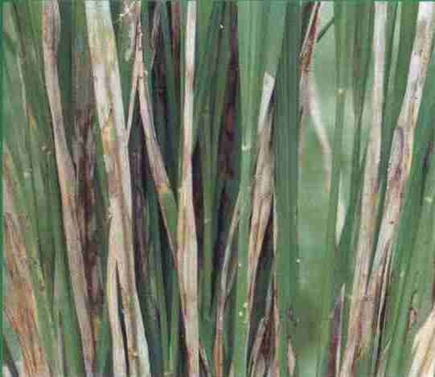

水稻纹枯病
病害别名：花脚秆、烂脚秆
为害部位：叶片、叶鞘
病害性质：重要病害
病原：稻立枯丝核菌(Rhizoctonia solani Kubn) 水稻纹枯病病原菌
水稻纹枯病病原菌
病害表现：一般在分蘖期开始发生病，最初在近水面的叶鞘上出现水渍状椭圆形斑，以后病斑增多，常相互愈合成为不规则大形的云纹状斑，其边缘为褐色,中部发绿色或淡褐色。叶片上的症状和叶路上基本相同。病害由下向上扩展，严重时可到剑叶，甚至穗部发病，大片倒伏。
水稻纹枯病田间症状
 水稻纹枯病病斑放大
水稻纹枯病叶鞘和叶上菌核
水稻纹枯病病斑放大
水稻纹枯病叶鞘和叶上菌核
发病规律：病菌以分生孢子或菌丝体在病谷和病稻草上越冬。种子上的病菌易诱发苗瘟。露天堆放的稻草为第二年发病的主要侵染源。病菌的发育最适温度为25－28℃；湿度高有利于分生抱子形成、飞散和萌发；长期灌深水或过分干旱，偏施、迟施氮肥等，均易诱发稻瘟病。
病害防治:1．选用抗病品种 因地制宜选用抗病品种，搞好品种合理布局，避免品种单一化种植。2．合理施肥、灌水 施肥原则为底肥足，追肥早，多施农家肥，增施磷钾肥。田间宜湿润为主，干干湿湿，适时晒田，以增强植株抗病能力。3．种子消毒 一是稻种预浸12小时后，用300－400倍强氯精液浸种水50千克，浸种30千克，浸48--60小时。4．药剂防治 每666.7平方米用20％三环唑粉剂100克或40％富士1号乳油60－70毫升加水加50-60千克喷雾。重病因需喷2次，间隔期为7―10天。